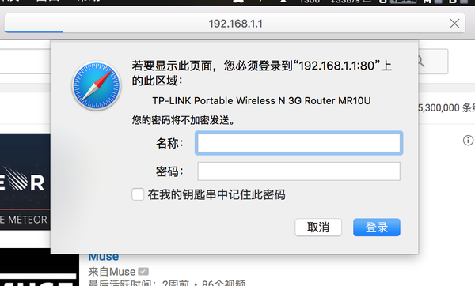
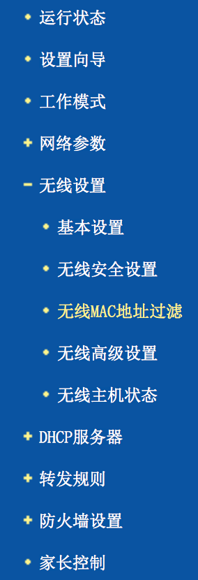
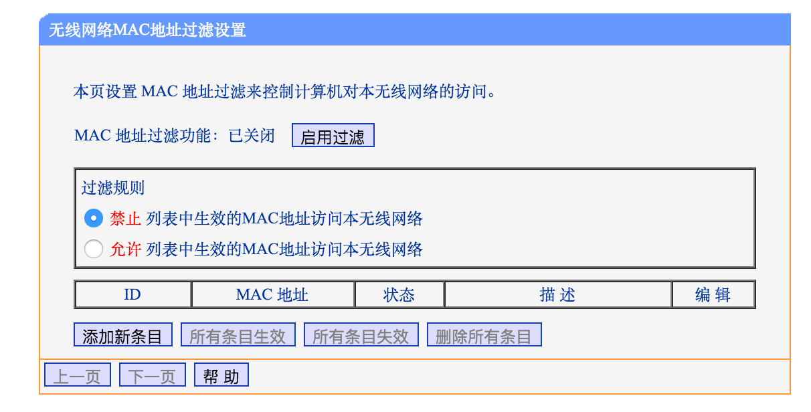
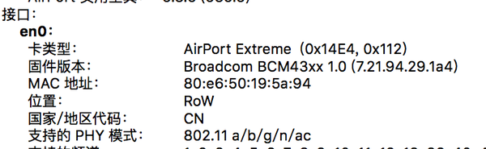
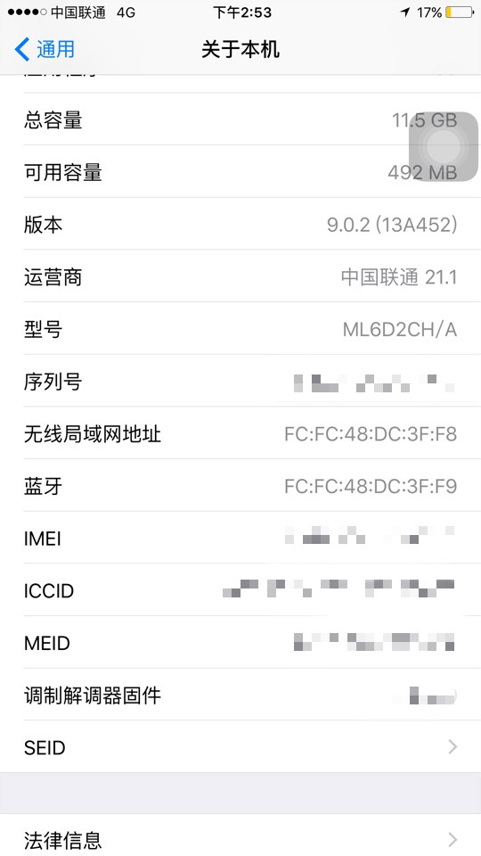
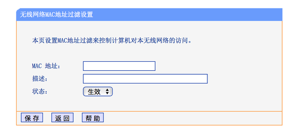
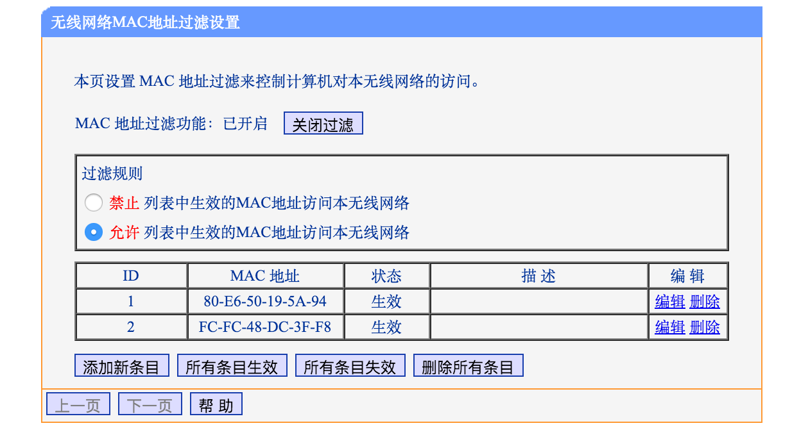

「路由器知识」 在家中wifi如何防止他人蹭网
2015-11-26
在家中你可能会经常碰到这样的问题,为什么我家的网速怎么变的这么满了呢,很有可能别人破解了你的密码,蹭着你们家的网络. 所以,应该如何拒绝他人蹭你们家的网呢?很简单,把你们家的网关了不就好了,我不上你也别想上,哈哈哈哈!!!
言归正传,下面就简单教下大家如何设置路由器来防止别人的恶意蹭网.
-
适用条件:家中有宽带,使用路由器上网
- 1、首先登陆自己的wifi,然后打开浏览器,在地址栏输入:192.168.1.1.此时提示输入账号密码,如果你以前没有改过密码, 那么默认账号密码均为admin (不同牌子路由器可能不同,不过一般是这个) 
- 2、点击左边导航栏的无线设置-----无线MAC地址过滤 
- 此时将会出现这个界面： 
- 3、找到你想要关联设备的MAC地址：(MAC地址即你的设备的物理地址)
就像这样 tip:这是macbook上的MAC地址
tip:这是iphone上的MAC地址
- 4、点击添加新条目，将你的设备的MAC地址输入 
- 5、之后先点击允许列表中MAC地址访问本网络，后点击开启过滤（一定要按步骤，顺序反了的话你就被隔离了，这样就比较麻烦了） 
这时候的MAC地址如果已经出现在了下面的ID里，就说明你添加成功了!!! 这样就大功告成，现在只有拥有MAC地址的设备才能登陆这个网络，是不是很酷。
原理分析:MAC地址你的设备的物理地址,将你的MAC地址添加入路由器之后,这时候路由器便只识别这些MAC地址的设备, 而其他的设备一律拒绝接入,这时候即使你的wifi没有设置密码也没有关系,别人也进不去.
未完待续:下次有时间接着介绍如何在路由器中限制某些设备的网速、限制某些设备只能登陆固定的网站以及一些路由器的常用的设置.